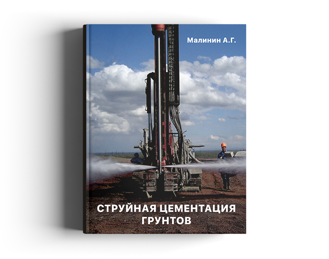

Струйная цементация грунтов
Малинин А.Г.
Монография посвящена технологии струйной цементации грунтов (jet-grouting). В книге описана сущность технологии, дан обзор современных достижений, составленный на основе зарубежных и отечественных источников. В первой части представлены результаты теоретических исследований автора, а во второй – практический опыт по применению технологии на строительных объектах.
Книга может быть полезна руководителям и специалистам проектных и строительных организаций, а также студентам строительных университетов для более широкого использования технологии струйной цементации грунтов.
Скачать книгу